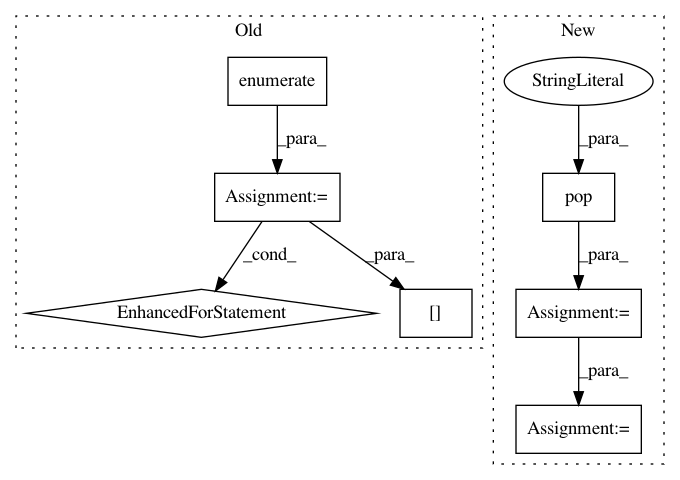

b1d15d9a4476f110d1a7c59051ed49a869bc5cb6,batchflow/models/tf/mobilenet.py,MobileNet,body,#Any#Any#Any#,66
Before Change
with tf.variable_scope(name):
x = inputs
for i, strides in enumerate(sep_strides):
x = cls.block(x, strides=strides, double_filters=double_filters[i], width_factor=width_factor,
name="block-%d" % i, **kwargs)
return x
@classmethod
def block(cls, inputs, strides=1, double_filters=False, width_factor=1, name=None, **kwargs):
After Change
x = inputs
i = 0
for block in layout:
repeats = block.pop("repeats")
block["activation"] = block.get("activation", default_activation)
block["width_factor"] = width_factor
for k in range(repeats):
if k > 0:
block["strides"] = 1
residual = block.pop("residual", False) or k > 0
x = cls.block(x, **block, residual=residual, name="block-%d" % i, **kwargs)
i += 1
return x
@classmethod
def block(cls, inputs, filters, residual=False, strides=1, expansion_factor=4, width_factor=1, kernel_size=3,
In pattern: SUPERPATTERN
Frequency: 3
Non-data size: 7
Instances
Project Name: analysiscenter/batchflow
Commit Name: b1d15d9a4476f110d1a7c59051ed49a869bc5cb6
Time: 2019-08-05
Author: d.mylzenova@analysiscenter.org
File Name: batchflow/models/tf/mobilenet.py
Class Name: MobileNet
Method Name: body
Project Name: analysiscenter/batchflow
Commit Name: 02098c5c44893ce455aefcfc452aa00bd655987b
Time: 2017-11-15
Author: rhudor@gmail.com
File Name: dataset/models/tf/unet.py
Class Name: UNet
Method Name: body
Project Name: analysiscenter/batchflow
Commit Name: ed8577a6e4afec9f68bf69dc5d506b425ad7ff17
Time: 2019-08-07
Author: d.mylzenova@analysiscenter.org
File Name: batchflow/models/tf/mobilenet.py
Class Name: MobileNet_v1
Method Name: body